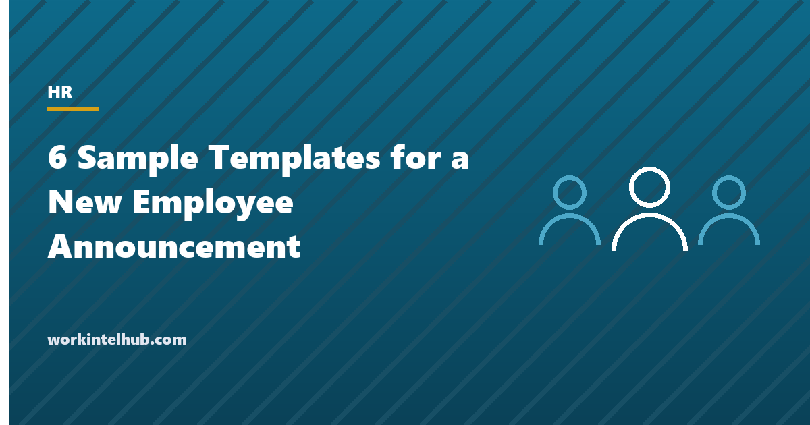

6 Sample Templates for a New Employee Announcement

A new employee announcement does a job for three audiences at once. It tells colleagues who the person is, what they will do and how to reach them, so the first week is not spent explaining. It tells the new hire they were expected. And it tells clients and partners who their new contact is before they find out by accident. The announcement is short, factual and warm, and it is sent the day the person starts or the day before.
Six templates cover the channels: a company-wide email, a team message, a senior or leadership appointment, a client introduction, a short chat post and an intranet profile. Each has the same core of role, start date, team, manager, background, focus and how to reach them. The Excel workbook holds an announcement checklist and a tracker, so every starter gets announced in every channel that matters. The welcome email page covers the message to the new hire; this one covers the message about them.
Download the templates
Free files: Word, Excel and PDF
Three files, free, no email required. Word to edit, Excel to track, PDF to print or share.
Templates open in Microsoft Word, Excel, Google Docs and Sheets, LibreOffice and any PDF reader. Free to use and adapt for your organisation.
The six announcements
| Template | Channel | Length | Sent by |
|---|---|---|---|
| Company-wide email | Email to all staff | Six to eight sentences | HR or the manager |
| Team announcement (chat or email) | Team email or chat | Three to four sentences | The manager |
| Senior hire or leadership appointment | Email from the executive | Two paragraphs | The executive the hire reports to |
| Client or external announcement | Email to each client | Two paragraphs | The account owner or manager |
| Short chat post | Chat channel | Two lines | The manager or buddy |
| Intranet or newsletter profile | Intranet or newsletter | Six fields | HR or communications |
What every announcement includes
- Name, as the person prefers to be called.
- Role, team and manager, so the org chart is clear.
- Start date, and where they are based.
- Two sentences of background that the new hire has approved; a line copied from a résumé without asking is a bad first day.
- What they will focus on in the first months, so colleagues know what to bring them.
- How to reach them and who their buddy is.
- Optionally, one personal line the new hire chose. Never a line about family, health or anything they did not offer.
Senior hires and client-facing roles
A leadership appointment is a company announcement from the executive the person reports to, with the scope they will lead, their priorities, and a proper thank-you to a predecessor if there is one; the promotion announcement covers the internal version. Client-facing hires need an introduction to each client before the handover, with the current contact's continued availability stated, because clients who learn of a change from an out-of-office reply assume something went wrong. The checklist and tracker make sure the client introductions happen; they are the ones most often missed. The onboarding checklist places the announcement among the other first-week tasks.
Key takeaways
- An announcement tells colleagues who, what, where and how to reach them; the new hire that they were expected; and clients who their contact is.
- Core details: name, role, team, manager, start date, approved background, first-months focus, contact, buddy.
- Get the background and any personal line approved by the new hire first.
- Senior hires are announced by their executive; client-facing hires are introduced to each client before the handover.
Frequently asked questions
What should a new employee announcement include?
The new hire's name, role, team and manager, start date and location, two sentences of background they have approved, what they will focus on first, how to reach them and who their buddy is. Optionally one personal line they chose and a photo with consent.
When should the announcement be sent?
On the first day or the day before, once the start is confirmed. Client introductions go before any handover of accounts. Senior appointments are often announced earlier, once the offer is signed and the predecessor's departure is public.
Who sends the new employee announcement?
The manager for team messages and chat posts, HR or the manager for the company email, the executive the person reports to for senior appointments, and the account owner for client introductions.
How much personal detail should an announcement include?
Only what the new hire offers and approves, such as a hobby or where they moved from. Nothing about family, health, age or anything else they did not volunteer, and no photo without consent.
Should new hires be announced to clients?
Yes, for client-facing roles, with an email to each affected client before the handover that introduces the new contact, states their background, and confirms the current contact's availability during the transition.